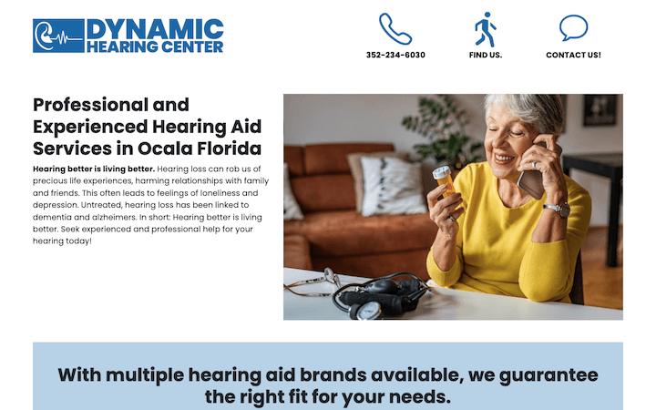
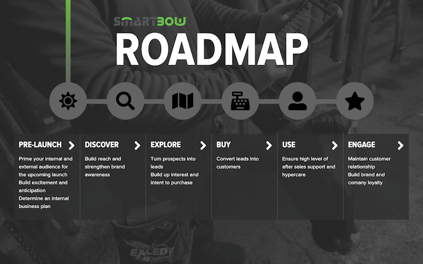
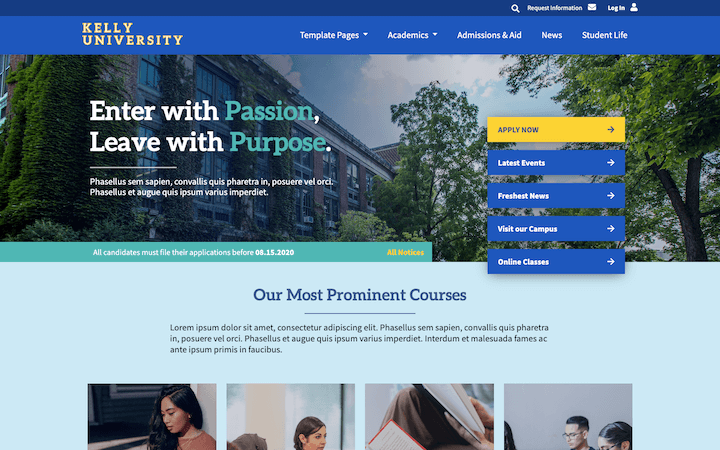
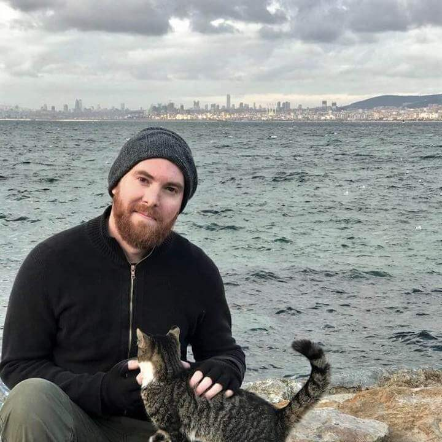

Timberline Hair Co
Designed and built the website and created the logo. After launch, I published policy and service updates and helped move online booking to Vagaro.
Web developer
I build accessible websites and help teams keep their content useful and up to date.
View projects
Designed and built the website and created the logo. After launch, I published policy and service updates and helped move online booking to Vagaro.

Built the homepage and 11 additional templates for the college’s CMS, including degree search, filters, and pagination.
Try Degree Search
A one-page website designed for older clients.

An employee training and reference app.

A sample college site built for an in-house CMS.
I’m a web developer based in Gresham, Oregon. I’ve worked with Adobe Experience Manager, Crownpeak, and WordPress, and accessibility testing and website QA have been a regular part of my work.
I moved into public service as a TriMet rail operator because I wanted to work closer to the community. I’m interested in bringing that same purpose to websites people rely on.
